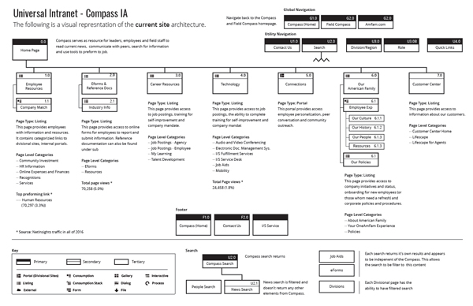
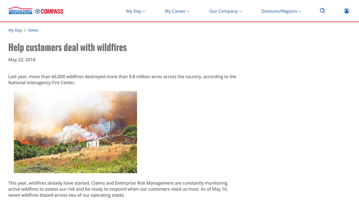

Overview
Headquartered in Madison, Wisconsin, American Family Insurance (AFI), employs 8,500 employees that support 9,500 sales agents and agency staff. With 83% of the gross total working outside of headquarters, internal communications, transparency and personalization is critical to corporate and customer success.
To connect corporate employees and agencies, all staff needed to have access to our intranet, Compass. To give everyone a stronger sense of belonging to one company, we set a goal to be the central source for news, announcements and events. Additionally, to keep everyone connected, we built a strategy to ensure our audience uses Compass as a tool to find web-based tools and share relevant content with their external social networks.
Defining the people and needs
To begin, we conducted listening sessions to help create user groups based on audience motivations, feelings, pain-points and goals. Through research, we discovered:
- Leaders need easy access to information. Creating experiences with their devices in mind was crucial to support their team and customers faster.
- Employees need access to tools and resources to support expectations. They have a strong desire to be productive, create quality work and feel valued.
- Sales leaders want to support agents who get frustrated with technology issues. Thus, updates without work-around strategies are valuable to them.
- Agents need to support their customers with exceptional service. They need to understand their schedule and pivot when customer issues arise.
- To support agents and customers, agency staff rely on the availability of tools and resources. At times, due to work volume, they don’t have time to interact with Compass and want a streamlined experience.

Based on the findings, we established a strategic foundation to create features that would accommodate each user’s needs to help them perform their responsibilities. We also exposed behavioral intent throughout our interviews that could be used to reach our audience at different times in different ways.
We also listened to the neeeds of our business stakeholders by leveraging our existing brand, style guide and pattern libraries. In doing so, we were able to reuse 65% of existing UI elements and components. This allowed us to explore designs that delivered proven engagement while being mindful of budget.
View the Phase 1 Report presented to stakeholders and leadership.Exploration
Next, we explored new opportunities for users to consume information. For instance, during the listening sessions we learned most users valued announcement headlines. We placed this content in expanding blocks for quick access. Additionally, we learned that users felt behind when returning from vacation. Upon return, most would rely on email and other channels to catch up. Because of this concern, we created a single area, which allows users to consume the last 30 days of content.
In addition to helping users consume content, we explored ways for users to customize their digital space. For instance, a majority of users bookmarked important links within their browser. Therefore, we created a place for users to access their links on any device or browser and display their favorite links on the home page.

List of improvements
New Compass homepage for all - The home page features a modern, branded, look with similar functionality across the AFI for all audiences based on corporate, role-specific and personalized content. The home page is broken into two main sections My Day and My Feed.
The first section, My Day, is designed to help users locate what they need in order to do their job. It features today’s news, their top four, the corporate calendar and announcements.
The second section, My Feed, lets users see previously released news articles, announcements and social posts (Twitter and Connections) in one location. It’s the place to catch up if individuals have been away from of the office.

The previous intranet (Compass) homepage for employees had inconsistent functionality that negatively impacted productivity. Moreover, the navigation was not intuitive, search results were unreliable and no consistent information architecture or standard were used. The intranet (Field Compass) homepage for agents didn't match the user’s mental models of modern digital experiences. So we introduced a personalized global navigation system that was action-oriented, allowing the employee audience complete their jobs efficiently. Decisions for rebuilding the global navigation were based on frequency of use, metrics and best practices. The personalized global navigation targets by role, location or individual preferences.

Persistent utility menu – Previously, site controls were inconsistently placed in throughout the intranet. The new utility menu captures these site controls allowing users standardized access throughout Compass.
Article improvements - We strengthened our article content by moving to shorter, easy-to-scan responsive layouts; while improving our visual storytelling through infographics, photos and video. We placed an emphasis on social and user-generated content, to further connect and share with an external audience.
Consolidated corporate messaging – We consolidated multiple communication tools into one. Allowing content authors, a place to efficiently deliver targeted information to AFI. Another notable improvement is these announcements are indexed for improved searchability.
Persistent favorites - Users can select from a personalized list of links or create their own. The top four links are then listed on their home page thus customizing Compass to be relevant to their jobs and interests.
Personalized RSS Feed - From one location, My Feed lets users see previously released news articles, announcements and social posts (Twitter and Connections). It’s the place to catch up if individuals have been away from of the office.
Improved content search - Users will benefit from divisional content placed within Compass, since it integrates with the new search strategy.
Alerts and notifications - Users can easily find alerts and other notifications in Compass with banners and counters visible on various features.
Compass portability - Compass was designed with mobile first in mind to accommodate multiple form factors.
The end result
Finally, we built and tested the new features. As a result, Compass is creating tangible impacts on engagement and productivity. Today we continue to learn and refine the platform.
- We personalized the user experience by making our navigation, utilities and content specific to individual user’s needs. We’re able to adjust users content by identifying their role, location and division.
- We introduced customization to the homepage by giving the users control to manage their own set of links. This feature is the first step in addressing insights gained from our research.
- We improved the ability to search and find content like announcements. We accomplished this by indexing the announcements within Compass.
- We made it possible for users to quickly discover what they may have missed while busy or out of the office. We integrated notifications from other systems to inform users about external items.